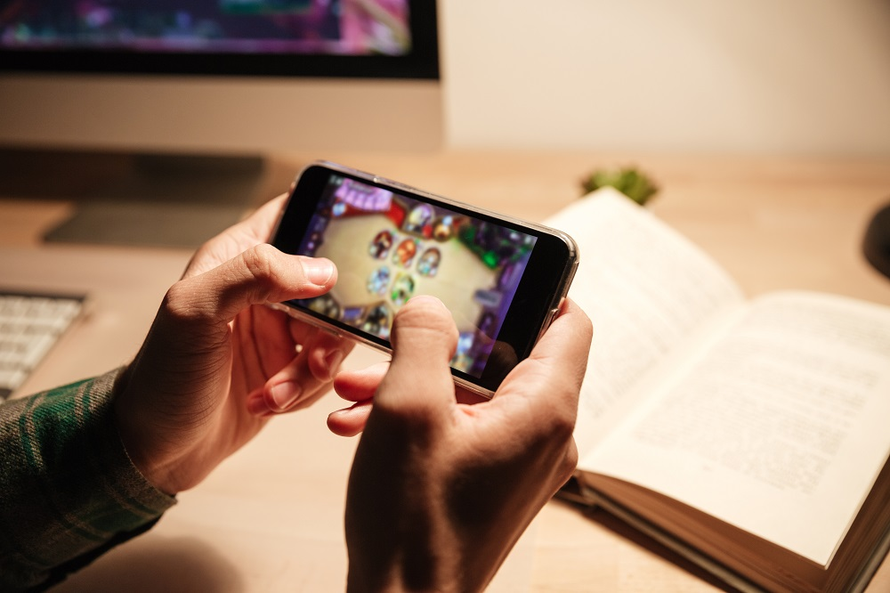
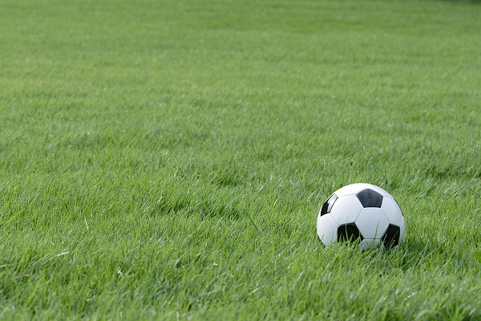

ソーシャルゲームとは、プラットフォームがSNSであるゲームのことです。特徴としては短時間で気楽に遊べるものが中心であり、ほとんどのゲームが基本的なプレイが無料であり、追加要素として課金システムを採用しています。

サッカーとは、足を使いボールを相手チームのゴールに入れることを目的としたスポーツである。 主に足を使ってボールを操り、パス、ドリブル、シュートなどプレーの大部分は足で行う。空中に浮きあがったボールの処理は頭を使って行う。手を使うと反則となるが、ゴールキーパーのみ相手の蹴ったボールを手で触ることが許される。